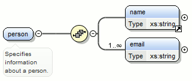
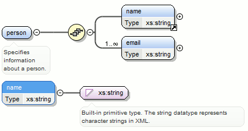
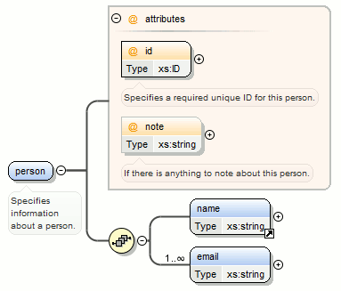
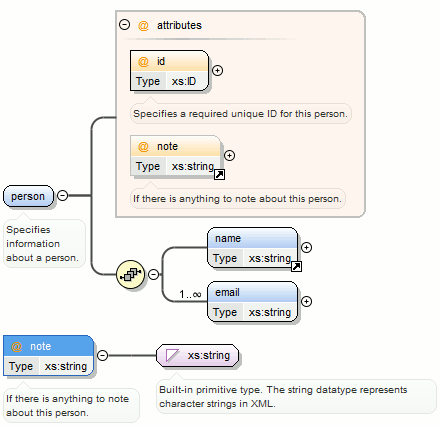
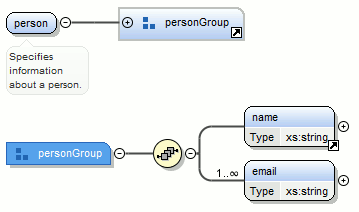
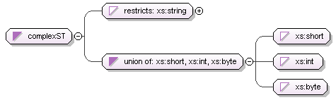
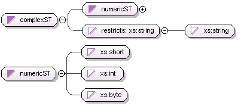
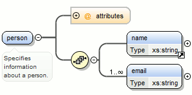
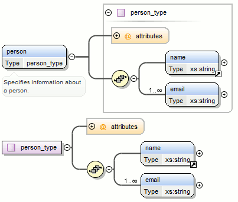

Contextual Menu Actions in the Design Mode
The contextual menu of the Design mode includes the following actions:
 Go to
Definition ()
Go to
Definition ()- Shows the definition for the currently selected component. For references, this action is available by clicking the arrow displayed in its bottom right corner.
 Open
Schema ()
Open
Schema ()- Opens the selected schema. This action is available for
<xsd:import>,<xsd:include>and<xsd:redefine>elements. If the file you try to open does not exist, a warning message is displayed and you have the possibility to create the file.  Edit Attributes ()
Edit Attributes ()- Allows you to edit the attributes of the selected component in a small in-place editor that presents the same attributes as in the Attributes view and the Facets view. The actions that can be performed on attributes in this dialog box are the same actions presented in the two views.
- Append child
- Offers a list of valid components, depending on the context, and appends your selection as a child of the currently selected component. You can set a name for a named component after it has been added in the diagram.
- Insert before
- Offers a list of valid components, depending on the context, and inserts your selection before the selected component, as a sibling. You can set a name for a named component after it has been added in the diagram.
- Insert after
- Offers a list of valid components, depending on the context, and inserts your selection after the selected component, as a sibling. You can set a name for a named component after it has been added in the diagram.
- New global
- Inserts a global component in the schema diagram. This action does not depend on the
current context. If you choose to insert an import you have to specify the URL of the
imported file, the target namespace and the import ID. The same information, excluding
the target namespace, is requested for an
<xsd:include>or<xsd:redefine>element.Note: If the imported file has declared a target namespace, the field Namespace is completed automatically. - Edit Schema Namespaces
- When performed on the schema root, it allows you to edit the schema target namespace and namespace mappings. You can also invoke the action by double-clicking the target namespace property from Attributes view for the schema or by double-clicking the schema component.
-
Allows you to edit the annotation for the selected schema component in the Edit Annotations dialog box. You can perform the following operations in the dialog box:
- Edit all
appinfo/documentationitems for a specific annotation - Allappinfo/documentationitems for a specific annotation are presented in a table and can be easily edited. Information about an annotation item includes: type (documentation/appinfo), content, source (optional, specify the source of thedocumentation/appinfoelement) andxml:lang. The content of adocumentation/appinfoitem can be edited in the Content area below the table. -
Insert/Insert before/Remove
documentation/appinfo- The Add button allows you to insert a new annotation item
(
Add button allows you to insert a new annotation item
(documentation/appinfo). You can add a new item before the item selected in table by pressing the Insert Before button. Also, you can delete the selected item using the Remove button.
Remove button. - Move items up/down - Do this by using the
 Move up and
Move up and
 Move down buttons.
Move down buttons. - Insert/Insert before/Remove annotation - Available for components that allow multiple annotations such as schemas or redefines.
- Specify an ID for the component annotation - An optional identifier for the annotation.
Annotations are rendered by default under the graphical representation of the component. When you have a reference to a component with annotations, these annotations are also presented in the diagram below the referenced component. To edit the annotations, use the Edit Annotations action from the contextual menu. If the reference component does not have annotations, you can edit the annotations of the referenced component by double-clicking the annotations area. Otherwise, you can edit the referenced component annotations only if you go to the definition of the component.Note: For imported/included components that do not belong to the currently edited schema, the Edit Annotations dialog box presents the annotation as read-only. To edit its annotation, open the schema where the component is defined. - Edit all
- Change XML Schema Version
- Use this action to change the XML Schema version of the current document.
- Extract Global Element
-
This action is available for local elements. A local element is made global and is replaced with a reference to the global element. The local element properties that are also valid for the global element declaration are kept.
Figure 1. Extracting a Global Element If you use the Extract Global Element action on a
<name>element, the result is:Figure 2. Extracting a Global Element on a <name>Element - Extract Global Attribute
-
This action is available for local attributes. A local attribute is made global and replaced with a reference to the global attribute. The properties of local attribute that are also valid in the global attribute declaration are kept.
Figure 3. Extracting a Global Attribute If you use the Extract Global Attribute action on a
@noteattribute, the result is:Figure 4. Extracting a Global Attribute on a @noteAttribute - Extract Global Group
-
This action is available for compositors (sequence, choice, all). This action extracts a global group and makes a reference to it. The action is available only if the parent of the compositor is not a group.
Figure 5. Extracting a Global Group If you use the Extract Global Group action on the
<sequence>element, the Extract Global Component dialog box is displayed and you can choose a name for the group. If you typepersonGroup, the result is:Figure 6. Extracting a Global Group on a <sequence>Element - Extract Global Type
-
This action is used to extract an anonymous simple type or an anonymous complex type as global. For anonymous complex types, the action is available on the parent element.
Figure 7. Extracting a Global Simple Type If you use the action on the
unioncomponent and choosenumericSTfor the new global simple type name, the result is:Figure 8. Extracting a Global Simple Type on a unionComponentFigure 9. Extracting a Global Complex Type If you use the action on a
<person>element and chooseperson_typefor the new complex type name, the result is:Figure 10. Extracting a Global Complex Type on a <person>Element  Rename
Component in
Rename
Component in- Renames the selected component.
 Cut
Cut
- Cuts the selected component(s).
 Copy
Copy
- Copies the selected component(s) to the clipboard.
- Copy
XPath
-
This action copies an XPath expression that identifies the selected element or attribute in an instance XML document of the edited schema and places it in the clipboard.
 Paste
Paste
- Pastes the component(s) from the clipboard as children of the selected component.
- Paste as Reference
- Creates references to the copied component(s). If not possible, a warning message is displayed.
- Remove Delete
- Removes the selected component(s).
- Override component
- Copies the overridden component in the current XML Schema. This option is available
for
xs:overridecomponents. - Redefine component
- The referenced component is added in the current XML Schema. This option is available
for
xs:redefinecomponents. - Optional
- Can be performed on element/attribute/group references, local attributes, elements,
compositors, and element wildcards. The
minOccursproperty is set to 0 and theuseproperty for attributes is set tooptional. - Unbounded
- Can be performed on element/attribute/group references, local attributes, elements,
compositors, and element wildcards. The
maxOccursproperty is set tounboundedand theuseproperty for attributes is set torequired. - Search
- Can be performed on local elements or attributes. This action makes a reference to a global element or attribute.
 Search
References
Search
References- Searches all references of the item found at current cursor position in the defined scope if any.
- Search References in
- Searches all references of the item found at current cursor position in the specified scope.
- Search Occurrences in File
- Searches all occurrences of the item found at current cursor position in the current file.
 Component Dependencies
Component Dependencies- Opens the Component Dependencies view that allows you to see the dependencies for the currently selected component.
- Resource Hierarchy
- Opens the Resource Hierarchy / Dependencies view that allows you to see the hierarchy for the currently selected resource.
- Resource Dependencies
- Allows you to see the dependencies for the currently selected resource.
 Expand
All
Expand
All- Recursively expands all sub-components of the selected component.
 Collapse
All
Collapse
All- Recursively collapses all sub-components of the selected component.
- Save as Image
- Saves the diagram as image, in JPEG, BMP, SVG or PNG format.
 Generate Sample
XML Files
Generate Sample
XML Files- Generates XML files using the current opened schema. The selected component is the XML document root. See more in the Generate Sample XML Files section.
- Flatten Schema
- Recursively adds the components of included Schema files to the main one. It also flattens every imported XML Schema from the hierarchy.
 Options
Options- Opens the Schema preferences page.